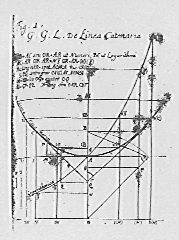
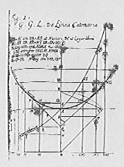

Die Kettenlinie
Das ursprüngliche Projekt stammt von R.Grothmann
Das Javascript-Programm zur Simulation der Kette ist von B.Berchtold
|  |
Für weitere Infos siehe auch Katenoide auf wikipedia
Das ursprüngliche Projekt stammt von R.Grothmann
Das Javascript-Programm zur Simulation der Kette ist von B.Berchtold
|  |
Für weitere Infos siehe auch Katenoide auf wikipedia